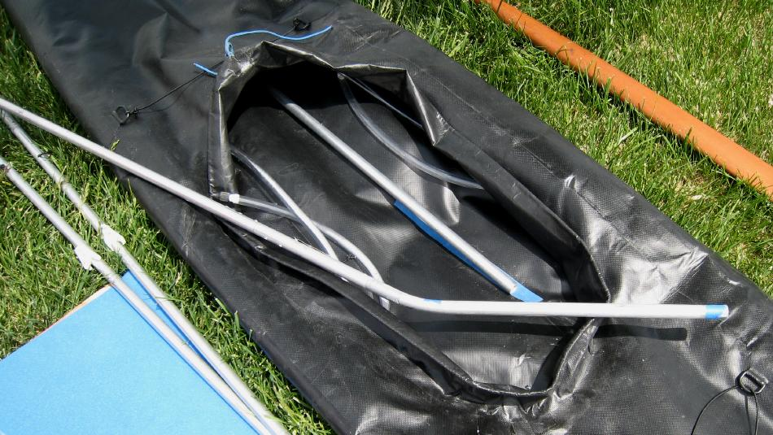

| Sonnet 16 | Menu Previous Page Next Page |
|

Insert the forward and aft keel sections. The bow can be seen in the pic below. All stringers are free standing as they don't attach to the stems. This greatly simplifies construction and assembly. HDPE cross-brace snaps can be seen on the two side stringers.
|
|